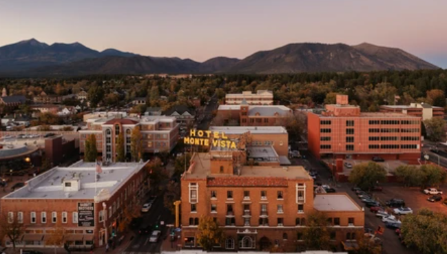

Welcome to Flagstaff
Flagstaff is a mountain town with a population of over 75,000. Established in the late 1800s and incorporated in 1928, Flagstaff is known for college campuses and for astronomy.
| Population | Incorporation Year | Region | Classification | Average Income |
|---|---|---|---|---|
| 75,000+ | 1928 | Northern Arizona | Rural/Urban Mix | $53,000 |
-
Top attractions in Flagstaff:
- Lowell Observatory
- Walnut Canyon National Monument
- Historic Downtown and Railroad District
-
Flagstaff is known and loved for:
- Its stunning location among the ponderosa pines
- A haven for outdoor and winter sports enthusiasts
- Its status as a Dark Sky City, perfect for stargazing